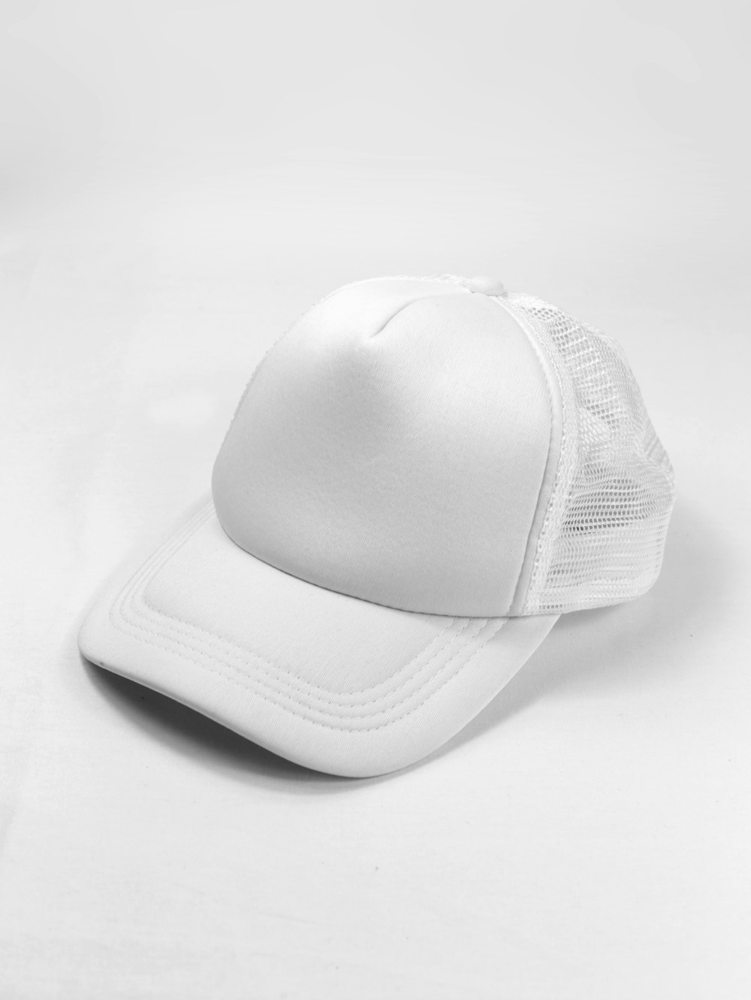
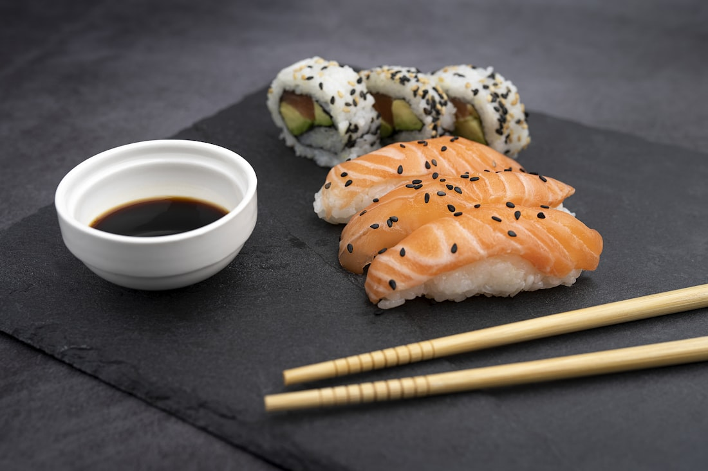
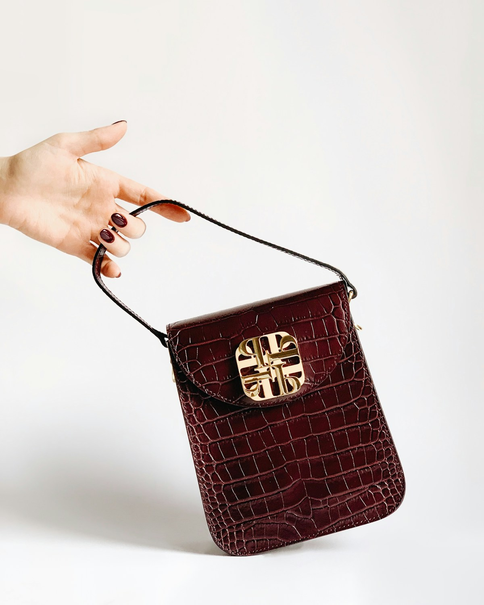
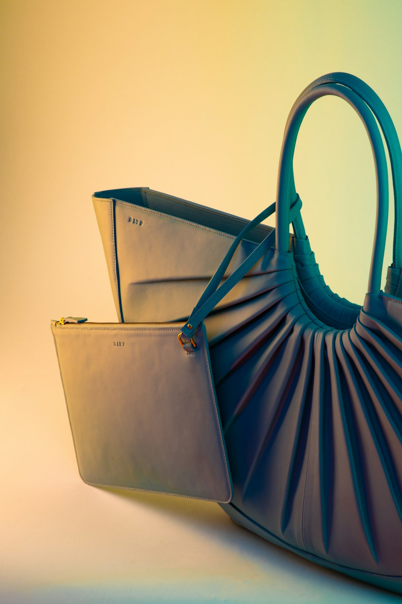
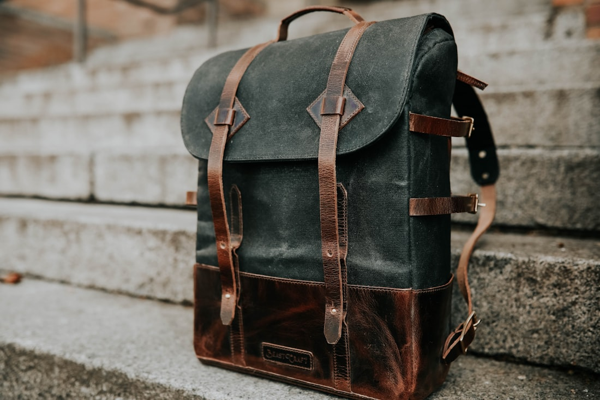
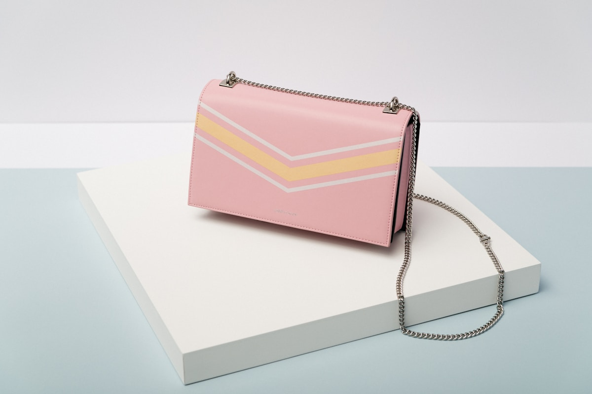

Sculpted Elegance. Uncompromising Leather Craft.
Welcome to Sable & Crest, where centuries of equestrian saddlery meet modern architectural silhouettes. Every luxury tote bag is individually cut from certified full-grain vegetable-tanned hides and hand-stitched with waxed linen thread to endure for generations.

A Living Monument to Honest Craftsmanship
In an age of ephemeral fast fashion and disposable synthetic accessories, Sable & Crest operates on a radically different temporal scale. We view the luxury tote bag not merely as a utilitarian carryall, but as an intimate personal artifact that absorbs the cadence of its owner's life, deepening in character, luster, and rich patina with every passing decade.
Our master artisans spend up to thirty-six continuous bench hours on every single piece. From inspecting raw hides under calibrated daylight to hand-skiving edges to millimeter tolerances, every motion is guided by an unwavering reverence for tactile perfection and structural equilibrium.
- • 100% Grade-A Full-Grain French & Tuscan Hides: Untouched by synthetic coatings or artificial embossing.
- • Two-Needle Hand Saddle Stitching: Imparting tensile strength that machine lockstitches cannot match.
- • Solid Cast Architectural Brass Crests: Precision-milled, hand-polished, and electroplated with 24-karat gold.
Anatomy of an Heirloom Tote
Four foundational design principles distinguish our luxury leather totes from conventional commercial luxury goods.
Full-Grain Purity
We preserve the dense outer epidermal grain layer of the hide, allowing natural grain variations and guaranteeing maximum tensile durability and breathability.
Saddle-Stitch Integrity
Constructed with dual-needle beeswax-coated French linen threads that form independent interlocking loops, preventing unraveling even under severe stress.
Lost-Wax Crest Hardware
Custom heirloom buckles, turn-locks, and base studs cast from virgin bronze and brass, hand-finished to resist oxidation and tarnish across generations.
Vegetable Tanning Alchemy
Tanned exclusively with natural chestnut, mimosa, and quebracho tree bark extracts over sixty days, eliminating harsh toxic chrome chemicals entirely.
The Permanent Tote Collection
Each silhouette represents a distinct study in structural proportion, carrying capacity, and aesthetic timelessness.
 Flagship
Flagship
The Sovereign Grande Tote
Our quintessential executive tote featuring structured gussets, dual reinforced handles, a padded 16-inch laptop chamber, and solid bronze crest feet.
The Obsidian Monolith Tote
Architectural minimalism realized in deep noir boxcalf leather. Features concealed magnetic flap closures, hand-painted beveled edges, and velvet lining.

Limited BatchThe Alabaster Promenade Shopper
Supple full-grain ecru leather structured with an internal carbon-fiber spine for featherlight balance and effortless day-to-evening versatility.
Commission Your Custom Tote
Select your preferred full-grain leather grade, hardware casting, and carrying silhouette to preview your bespoke piece.
The Living Evolution of Organic Patina
True full-grain vegetable-tanned leather is a living substance that continuously breathes and interacts with its environment. Unlike chrome-tanned industrial leather that degrades and peels over time, vegetable-tanned hides absorb ambient light, natural skin oils, and atmospheric humidity, transforming into a deep, glossy caramel patina unique to the journey of its custodian.
We steep our hides in progressive oak and chestnut tanning extraction solution pits for sixty consecutive days. This slow molecular saturation permanently cross-links the natural collagen fibers, producing unmatched density, supple hand-feel, and exceptional structural memory.
Lifetime Patina Guarantee
Every Sable & Crest tote includes complimentary bi-annual conditioning and leather spa treatments at our master atelier workshops.

The Legendary Double-Needle Saddle Stitch
The hallmark of genuine bespoke leathercraft is the saddle stitch—a centuries-old technique perfected by French equestrian saddle-makers. Two blunt harness needles threaded with beeswax-coated linen pass simultaneously in opposite directions through hand-pricked awl holes.
If a single thread in a conventional machine lockstitch breaks, the entire seam will progressively unravel. In stark contrast, our saddle stitch forms independent interlocking knots at every single stitch hole. Even in the improbable event that a thread is severed, the surrounding seam remains completely intact and secure.
- • Hand-pricked at 7 to 9 stitches per inch using French diamond-point irons.
- • 100% natural Lin Câblé linen thread coated in unrefined beeswax.
- • Hammered flat and polished with natural bone folders for flush edge seams.

Solid Bronze & Heirloom Metallurgy
Every buckle, lock, and protective base stud is custom-cast in small artisanal foundries to ensure unbending strength and lustrous beauty.
Lost-Wax Casting
Hardware patterns are sculpted in wax and cast in molten architectural bronze, ensuring razor-sharp crest heraldry definition.
Multi-Stage Hand Polishing
Each component undergoes five successive stages of diamond-paste buffing, removing micro-imperfections before electroplating.
Triple-Dip 24k Gold Coat
A heavy 5-micron gold layer ensures lasting luster that withstands daily contact, keys, and environmental friction without flaking.
The Journey of Creation
Follow the methodical five-step discipline required to transform raw unblemished leather into an enduring masterpiece.
Hide Selection & Grain Mapping
Artisans examine full hides under natural northern daylight, identifying grain direction, natural stretch characteristics, and flaw-free panels for cutting.
Precision Hand Clicking & Skiving
Panels are hand-cut using French curved blades. Edges are then skived down to microscopic gradations to create seamless overlapping structural joints.
Creasing & Multi-Layer Edge Finishing
Edges are heated, beveled, and treated with five hand-painted coats of Italian edge lacquer, sanded smooth between each curing layer.
Saddle-Stitch Assembly
Using a wooden stitching pony, the bag is assembled stitch by stitch with waxed linen thread under steady, calibrated manual tension.
Final Inspection & Atelier Seal
Every tote undergoes dimensional stress analysis, hardware torque checks, and is individually stamped with the master artisan's bench hallmark.
Words From Our Patrons
Reflections from executives, collectors, and connoisseurs who carry Sable & Crest across the globe.
"The Sovereign Grande Tote is without question the finest leather item I have owned in thirty years of collecting. The saddle stitching is immaculately uniform, and after eighteen months of daily transatlantic travel, the patina is breathtaking."
"In a world where luxury has become industrialized, Sable & Crest feels like a return to pure, uncompromising atelier craftsmanship. The weight of the bronze hardware and the rich aroma of vegetable-tanned leather speak for themselves."
"The bespoke process was extraordinary. Being able to choose the hide grain and custom crest finish made the final tote feel like an intimate extension of my professional wardrobe. A true heirloom piece."

Crafted in Harmony with Nature
True luxury must never come at the expense of environmental well-being or ethical integrity. At Sable & Crest, 100% of our hides are sourced exclusively as by-products of European agriculture, preventing valuable natural materials from entering landfills.
Our partner tanneries in Tuscany and France belong to the Leather Working Group (LWG) Gold Standard, utilizing closed-loop water treatment systems and 100% biodegradable organic tree tannins. We reject petroleum-based faux leathers that shed non-biodegradable microplastics, dedicating ourselves to purely circular, bio-degradable luxury.
Explore Our Sustainability CharterThe Sable Heirloom Warranty
We construct every tote with the deliberate intention that it will outlive its maker. If any structural stitching or hardware element fails at any point during its lifetime, return it to our atelier for complimentary restoration by our master craftsmen.
Dispatches on Craft & Style
Delve into our authoritative treatises on leather metallurgy, equestrian saddle stitching, vegetable tanning science, and heirloom tote care.
The Geometry of Saddle Stitching in Fine Leathercraft
Explore why traditional two-needle saddle stitching remains the absolute zenith of tensile durability and structural elegance in high-end leather goods.
Read in Journal →
Vegetable Tanning vs. Chrome: The Patina Matrix
An exhaustive scientific exploration into organic tree-bark tannins, collagen cross-linking, and how natural patina transforms fine leather over time.
Read in Journal →
The Lost-Wax Foundry: Architectural Hardware Casting
How bespoke crest hardware is precision-sculpted in wax, cast in architectural bronze, and electroplated with 24-karat gold for heirloom longevity.
Read in Journal →Frequently Asked Questions
Comprehensive details regarding our leather sourcing, bespoke commissions, lead times, and shipping protocols.
Because each bespoke tote is individually hand-cut and saddle-stitched by a single master artisan, typical production time ranges between four to six weeks from final leather selection and monogram approval. Clients receive photographic workbench updates at key milestones.
"Genuine leather" is an industrial marketing term frequently used for lower-tier split leather with artificial plastic coatings. In contrast, "Full-grain leather" represents the uppermost epidermal layer of the hide, retaining natural grain density, water resistance, and the ability to develop a glorious golden patina.
We recommend applying a light coat of pure beeswax and organic jojoba oil balm twice annually. Avoid exposure to extreme direct heat and synthetic solvent sprays. In the event of rain exposure, gently wipe with a dry cotton cloth and allow to air-dry away from radiators.
Our lifetime warranty covers all structural craftsmanship defects, including seam stitching, edge lacquer bonding, handle reinforcement rivets, and bronze hardware mechanisms. We will repair or restore your piece at zero labor charge for the entire lifetime of the product.
Yes. We ship worldwide via express fully-insured courier partners. Every tote is packed in a signature cedarwood box, encased in a tailored breathable organic cotton dust cover, and accompanied by a numbered certificate of origin.
Private Batch Allocations & Atelier Dispatches
Subscribe to receive private invitations to rare leather batch releases, bespoke trunk shows, and editorial monographs on leathercraft history.